拆手机 · 钻进 SoC · 看清一帧画面从 CPU 到 OLED 像素的完整链路
一块屏、一块电池、一小块主板，塞在金属中框里。主板只有巴掌的三分之一大，上面最大的那颗芯片就是 SoC。
如果换成电脑那种分立的 CPU、显卡和内存条，主板要大十倍，手机就拿不动了。为什么手机要把什么都塞进一颗芯片？体积和功耗。芯片之间连线越长，驱动信号越费电；做进同一块硅片，距离从厘米变成毫米，省下的电全变成续航。
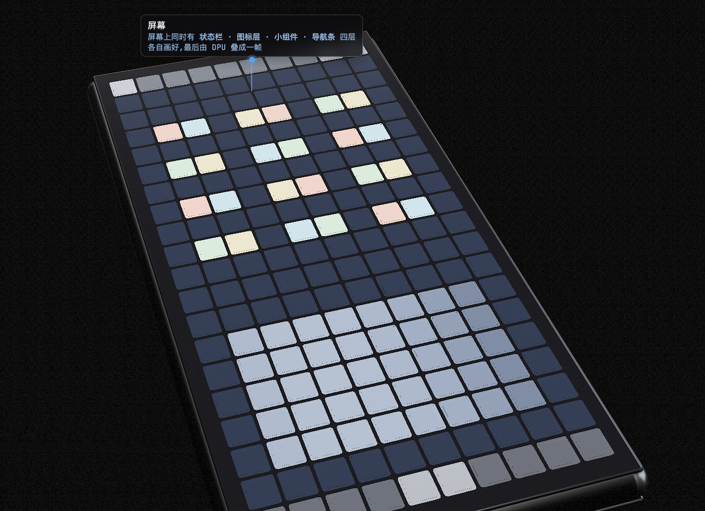
▲ 实时渲染：亮屏状态，屏幕上同时有状态栏、图标层、小组件、导航条四层
上层是屏幕，中间大半是电池，只有顶部一条是主板。主板和屏之间靠几根柔性排线连着——所有画面数据都从这几根线过去，同时还走触摸数据和电源。
为什么主板挤在顶部一条？电池要最大的连续空间，而且发热的芯片离电池越远越好——锂电池怕热。
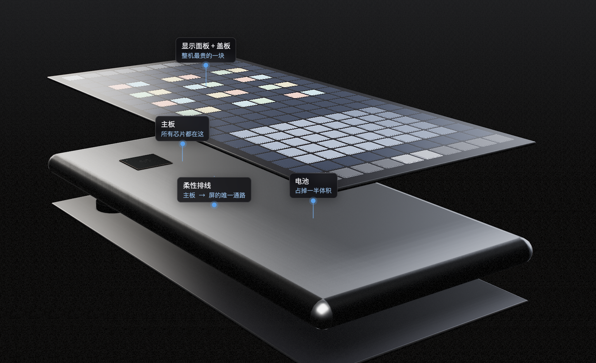
▲ 三层分离：亮着的屏 / 电池 + 主板 / 后盖
主板上那颗最大的方块其实是两颗芯片叠在一起：下面是 SoC，上面直接摞着 LPDDR 内存，中间用一圈锡球连接——这叫叠层封装（PoP）。
不叠的话内存要放到旁边，走线长几厘米，高频信号跑不动，还多占一块面积。为什么手机能叠、电脑不能？手机内存功耗小、发热小，热量能从底下的基板走掉；电脑的显卡三百瓦，上面再盖一块芯片就散不出去了，所以显存只能摆在旁边。
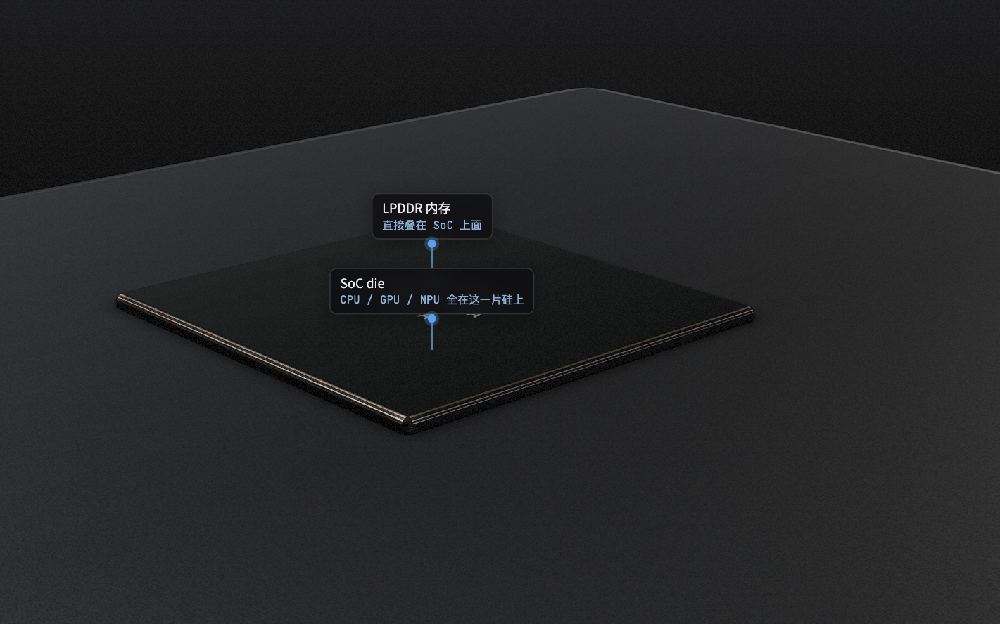
▲ SoC 基板 + die + 上方叠封的 LPDDR + 一圈锡球
左边是四个大核 + 四个小核的 CPU，右上是六个 GPU 核，右边是跑 AI 的 NPU 和处理照片的 ISP，中间一竖排是六片系统级缓存，下边是四个内存控制器、DMA、DPU 和 MIPI DSI。
它们之间架着铜色轨道，这是片上网络（NoC），一个三乘三的网格。没有它，这十几个模块就得两两拉专线，线数按平方涨，芯片面积全被走线吃掉。
为什么手机用网格，而电脑显卡用一条粗干道？显卡里几十个计算单元干的是同一件事、访问模式相似，拉一条宽干道最直接；手机 SoC 里十几种模块脾气完全不同——CPU 要低延迟、GPU 要大带宽、显示单元要稳定节拍——网格能让它们各走各的路，互不堵塞。
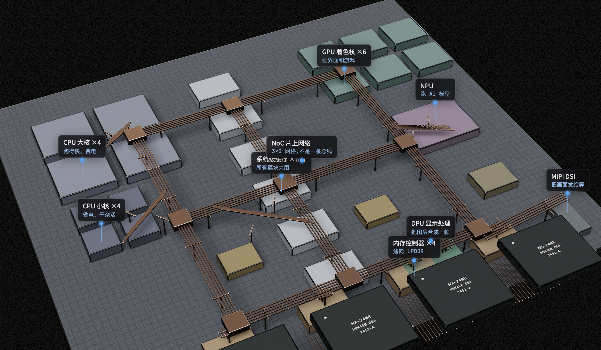
▲ SoC 内部：大小核 / GPU / NPU / 系统级缓存 / 内存控制器 + 3×3 网格 NoC
你手指一划，App 在 CPU 大核上算出这一帧长什么样：哪些图层、各自在哪、多大。这些变成绘制命令写进内存，再通过片上网络通知 GPU 去画。
为什么 App 跑在大核？界面响应要低延迟，大核频率高、乱序执行强，一次算完。后台同步、推送这些不急的活交给小核，省电。
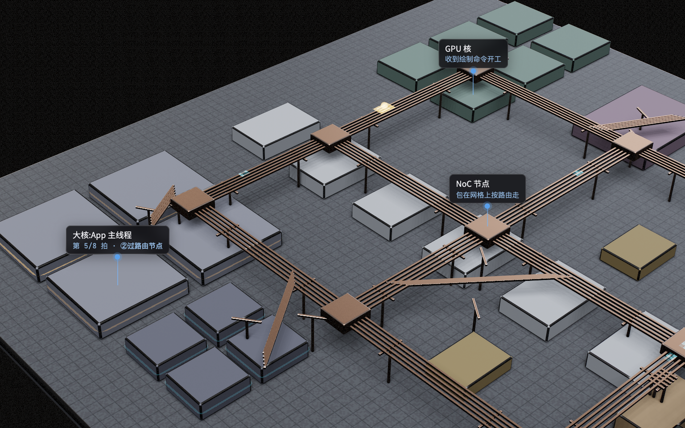
▲ 命令包从大核出发，沿网格先横后竖走到 GPU
GPU 把每个图层画出来，结果写进内存。手机用的是统一内存：CPU 和 GPU 共用同一块物理内存，同一份数据不用来回拷贝。
为什么电脑反而要分开？独立显卡插在 PCIe 上，离 CPU 十几厘米，共用一块内存的话谁访问都慢；而且显卡要的带宽是 CPU 的十几倍，专门配显存才划算。手机所有东西挤在一颗芯片里，共用是最省的选择。
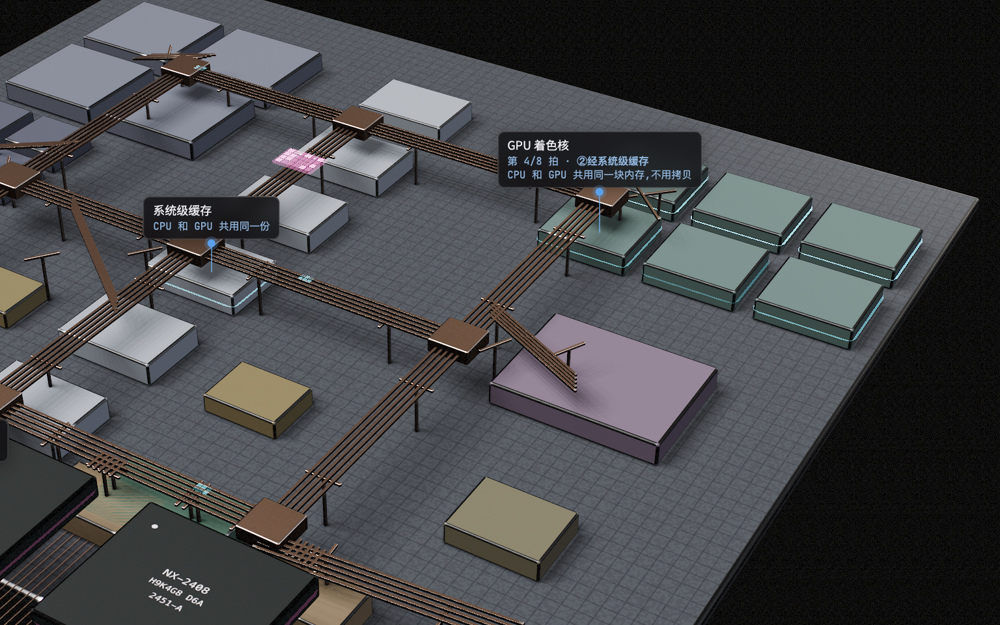
▲ GPU 核逐块算像素 → 系统级缓存 → 内存控制器 → LPDDR
内存里一块数据要挪到另一处（比如相机拍的原始图交给 ISP、音频送给编解码），DMA 引擎接过这活：CPU 只说一句"把 A 搬到 B，搬完叫我"，然后就去睡觉，搬完 DMA 发个中断把它叫醒。
没有 DMA，CPU 得自己一个字一个字读了再写，几兆的数据要几百万次读写，全程满载——费电还什么别的都干不了。搬运是纯体力活，不需要判断。给它配一个只会搬东西的小硬件，面积很小，却把 CPU 从最没技术含量的工作里解放出来。手机上这一条直接换算成续航。
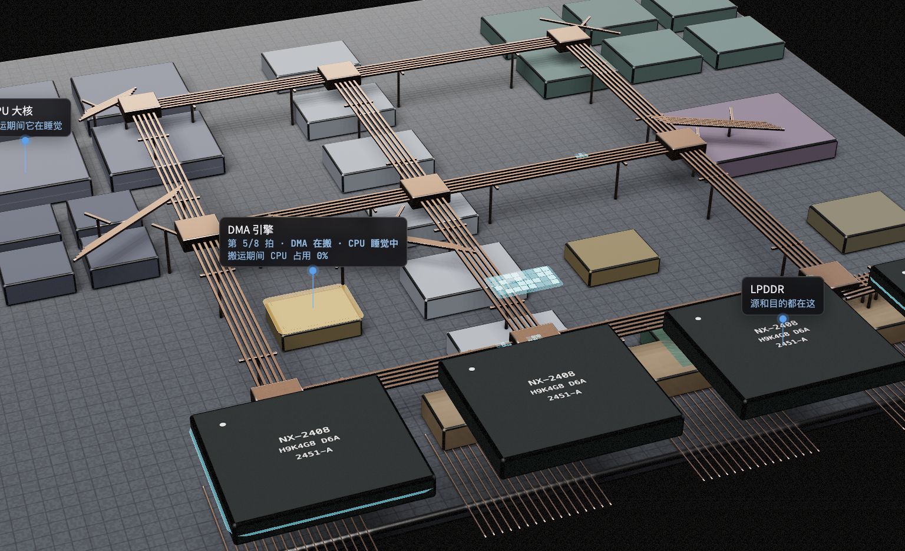
▲ 搬运期间 CPU 大核全部暗着，占用 0%
屏幕上同时有好几层：状态栏、App 画面、导航条、输入法。它们各自画在内存里，由 DPU（显示处理单元）按次序叠起来、缩放、做色彩管理，合成最终这一帧。
没有它，合成就得让 GPU 干——GPU 每帧要多读写一遍全屏数据，功耗明显上去，而且它本来该去画下一帧。这活每秒钟必做 60~120 次，规则又固定（叠加、混合、缩放），做成专用电路比通用 GPU 省一个数量级的电。这是手机能一直亮着屏还不烫的关键之一。
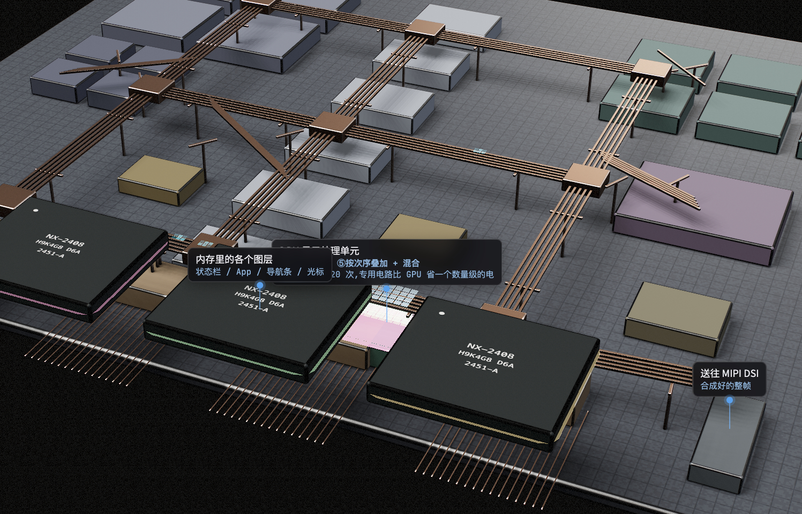
▲ 四个图层从内存逐个取出，在 DPU 上叠起来
合成好的一帧要出芯片。MIPI DSI 把像素切成包，分到四条数据通道上串行发出，另有一条时钟通道让接收端对准节拍。每条通道也是一对差分线。
为什么手机用 DSI 而电脑用 DisplayPort？DSI 是短距离（几厘米）、低功耗、省引脚，还支持"只发变化的那部分"和低功耗待机；DisplayPort 要走两米线缆、支持热插拔和多种分辨率协商，复杂得多也费电得多。各自为自己的场景做了优化。
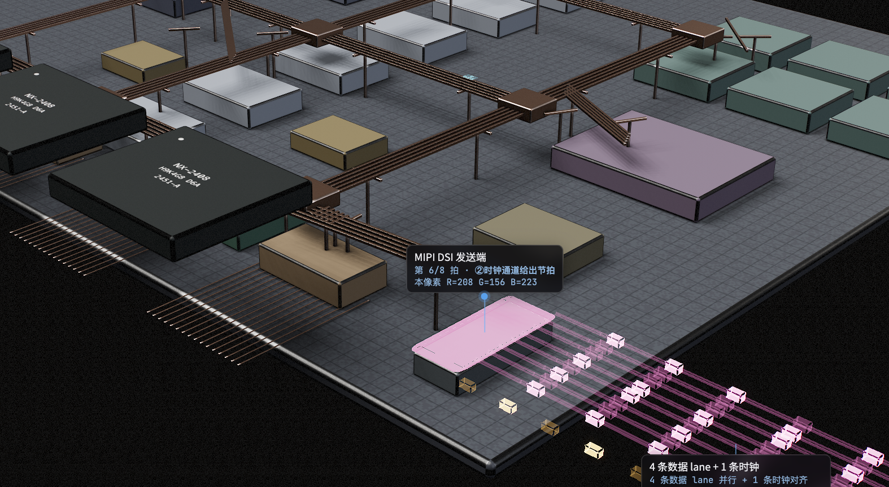
▲ 24 位像素拆成比特，分到 4 条 lane 串行发出 + 1 条时钟
数据经排线到屏幕上的驱动 IC。它把收到的像素存进自己的行缓冲，再按行和列把电压加到面板上对应的像素。
为什么驱动 IC 要贴在屏上，而不是放主板？它要接出几千根细电极直连面板，这些线只能做在玻璃上；放主板就得几千根排线，根本不可能。
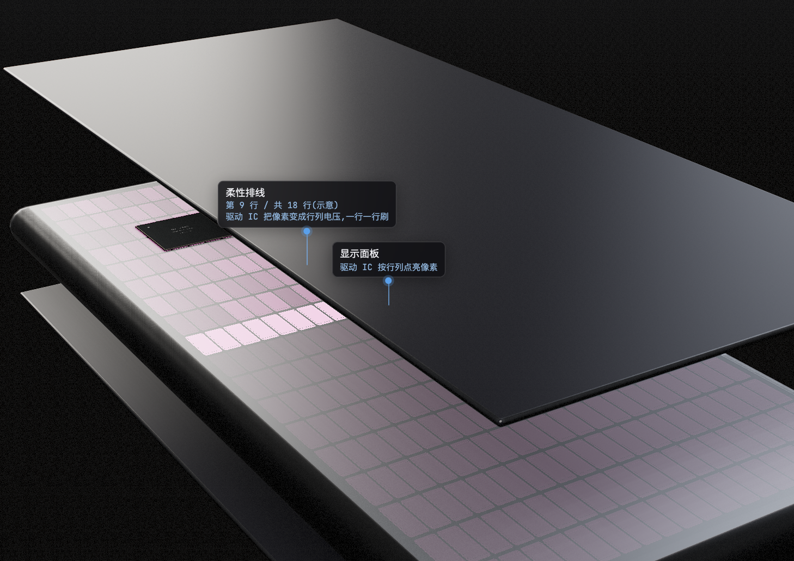
▲ 像素流经排线到驱动 IC，面板上一行一行刷
每个子像素是一小块有机发光材料夹在两个电极之间：通电就发光，电流越大越亮。红绿蓝三个子像素各自一块，各自一个 TFT 管着电流。
为什么 OLED 的黑是真黑？这个像素不通电就完全不发光，是纯黑。液晶屏的背光一直亮着，液晶只能"挡"，挡不干净，黑就是深灰。代价是有机材料会老化，亮得多的子像素衰减快——这就是烧屏。
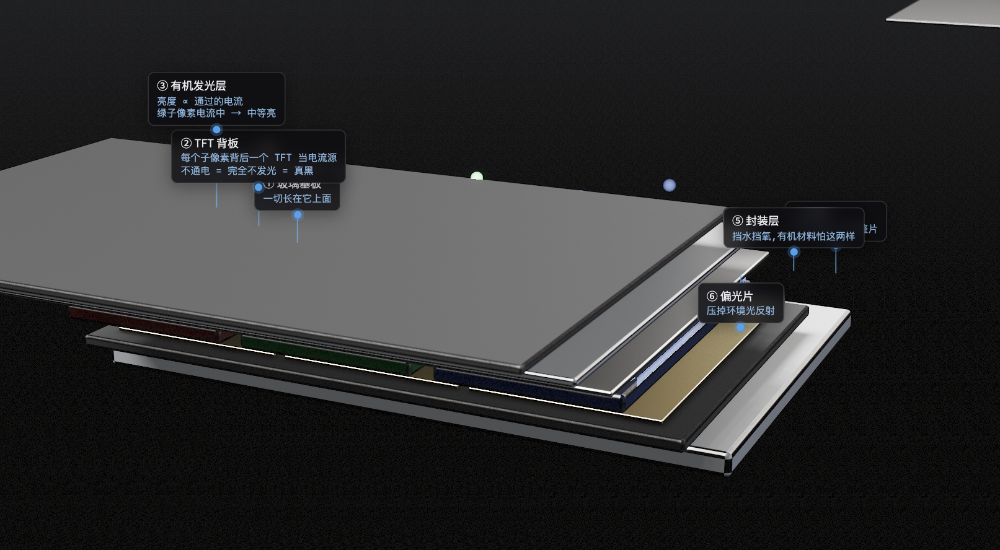
▲ 六层剖面：玻璃基板 / TFT / 有机发光层 / 阴极 / 封装 / 偏光片
| 液晶（LCD） | OLED | |
|---|---|---|
| 怎么亮 | 背光全亮，液晶转角决定挡多少 | 每个子像素按电流自己发光 |
| 黑 | 挡不干净，是深灰 | 不通电 = 真黑 |
| 深色内容功耗 | 跟内容无关，一样耗电 | 黑像素不耗电 |
| 形态 | 背光模组是硬的 | 能做曲面和折叠 |
| 短板 | 做不出真黑和超薄 | 亮度上限、寿命、成本，还有烧屏 |
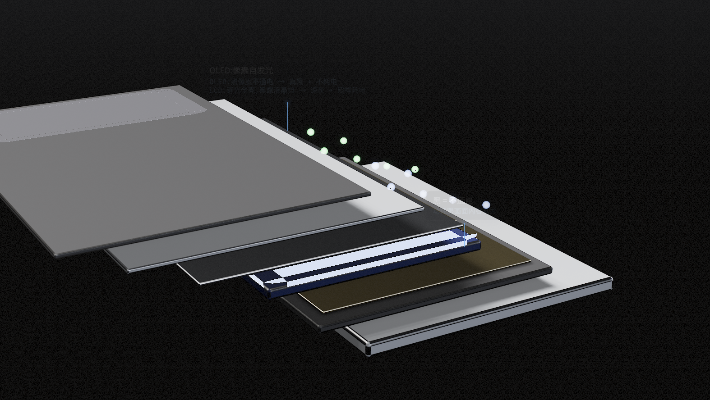
▲ 同一帧里，OLED 的黑区完全不通电
| 设计 | 为了解决什么 |
|---|---|
| 全塞进一颗 SoC | 连线越短越省电，省下的全变续航 |
| 内存叠在 SoC 上（PoP） | 走线几厘米高频信号跑不动，还占面积 |
| 网格状片上网络 | 十几种模块脾气不同，要各走各的路 |
| 统一内存 | 同一份数据不用在 CPU 和 GPU 之间拷 |
| 专门的 DMA | 搬运不需要判断，不该让 CPU 满载去干 |
| 专门的 DPU | 每秒合成上百次，专用电路省一个数量级的电 |
| MIPI DSI 串行 | 并行线排不细也弯不进手机里 |
点击阅读原文可以打开交互版本，自己拖动视角、切换十二个站点，还能一拍一拍地看数据在芯片里怎么走。